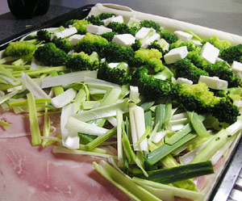

Broccoli-Lauch-Pastete
4,5 von 6Backblech mit Blätterteig auslegen. Mit Schinken, Fetakäse, Lauch und blanchiertem Broccoli belegen. Für den Guss etwas Mehl in Butter andämpfen und mit 2dl Gemüsebouillon ablöschen. Unter ständigem Rühren 2dl Rahm und zwei gepresste Knoblauchzehen beigeben. Mit Salz und Pfeffer würzen. Etwas auskühlen lassen und 1 Ei darunter ziehen. Den Guss über die Pastete geben. Mit einem Blätterteigdeckel verschliessen. Mit Eigelb bestreichen und bei 200 Grad ca. 30 min backen. Mit Salat servieren.
